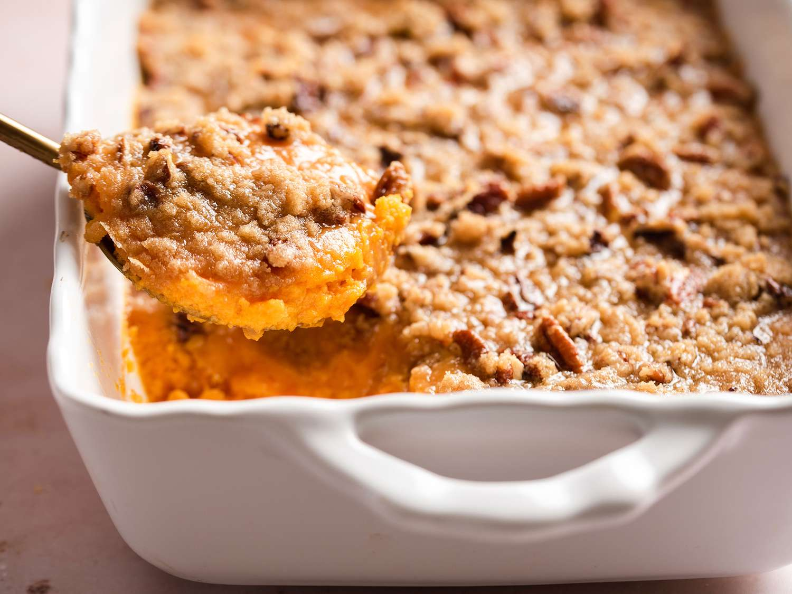

Decsription
The holidays are knocking on the the door, and theres just some dishes that your
or family should not go without and sweet potato casserole is no doubt one of them.
Whether your cooking for your kids, for that friendsgiving or trying to impress your
parents with a dish, this recipe will not dissapoint! This recipe makes about 12
servings amd has a total prep(20 mins) and cook(45 mins) time of 1 hour and 5 minutes
Ingredients
Sweet Potatoes
- 4 cups peeled, cubed sweet potatoes
- 2 large eggs, beaten
- 1/2 cup white sugar
- 1/2 cup milk
- 4 tablespoons butter, softened
- 1/2 teaspoon vanilla extract
- 1/2 teaspoon salt
Pecan Topping
- 1/2 cup backed brown sugar
- 1/3 cup all-purpose flour
- 3 tablespoons butter, softened
- 1/2 cup chopped pecans
Steps
- Preheat oven to 325 degrees F
- Prepare sweet potatoes: Put sweet potatoes in a medium saucepan and cover with
water. Cook over medium-high heat until tender, 10-15 minutes. Drain and transfer
to a larger bowl.
- Mash drained sweet potatoes with a fork. Add eggs; mix until well combined. Add
sugar, milk, butter, vanilla, and salt; mix until smooth. Transfer to a 9x13-inch
baking dish
- Make topping: Mix brown sugar and flour together in a medium bowl. Cut in butter
with a pastry cutter until mixture is coarse and looks like peas; don't overmix.
Stir in Pecans. Sprinkle topping over sweet potato mixture.
- Bake in the preheated oven until topping is lightly browned, about 30 minutes.